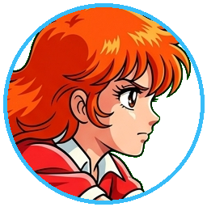
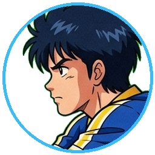

Avatar Profilo / HUD Coerenti

Schiacciatrice Atleta 1
Palleggiatore Atleta 2Controlli Prospettiva & Pose
Audio & Schermo Intero
Stadio Anime 80s & Scambio Pallavolo
Palestra con parquet, rete con seggiolone, Atleta 1 (sinistra) e Atleta 2 (destra) rivolti alla rete.